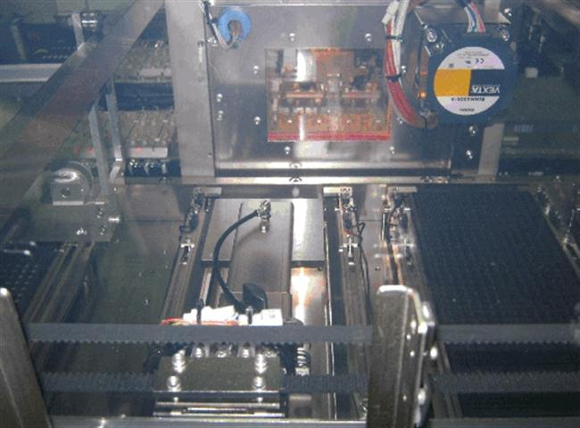

Service History
Subject: NS-8080 RS485 Timeout error
Handler Model: NS-8080 (NS8080-01,) 8 Hands High UPH
Controller: RC520
Date: 12 Apr 2010
Symptom
NS-8080 encountered RS485 Timeout error.
The time empty tray arm position :-
Actually the time empty tray arm don't have activities.

Also encountered jamming "i/p arm z axis servo error was detected". Found 1 M3 x 8MM screw stuck inside the head F.
I check all Input arm, do not know where the screw comes from..
Action
Cause
Remarks
Note: Usually, it detects “ servo error”, but it seems to have time out check because it takes long time to detect servo error near to completed position.